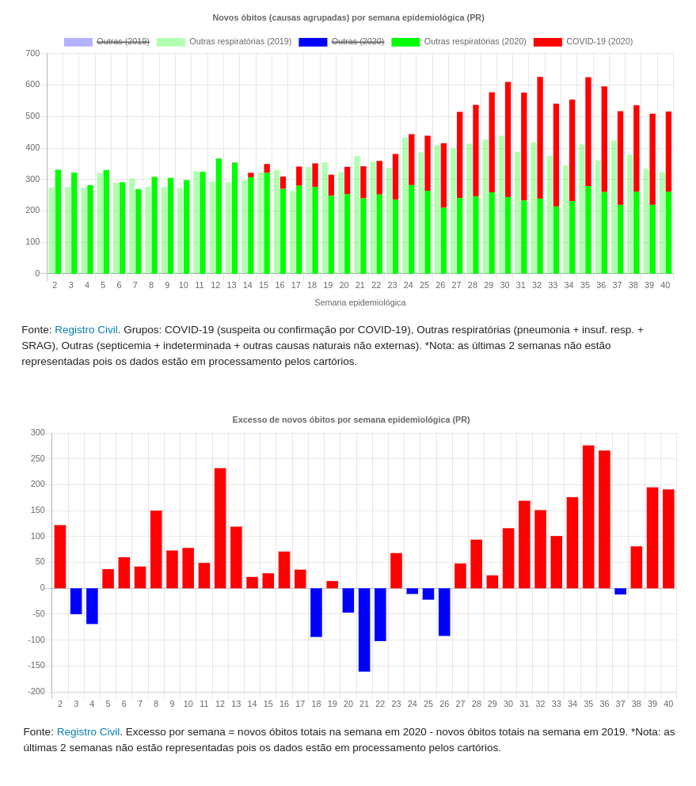

Trabalhando com dados abertos com Python
Turicas aka Álvaro Justen
20 de março de 2021
$ whoami
Turicas, prazer! =)
Sigam-me os bons:
{twitter,
github,
youtube,
slideshare,
instagram}
/turicas
turicas@brasil.io
Slides em:
bit.ly/turicas-jornada-colab
Software Livre & Python
(desde 2004/2005)


Dados Abertos
“ Dados abertos são dados que podem ser livremente usados, reutilizados e redistribuídos por qualquer pessoa - sujeitos, no máximo, à exigência de atribuição da fonte e compartilhamento pelas mesmas regras. ”-- OpenData Handbook (definição de Open Definition)
Mais detalhes:

(em conjunto com Juan Torres, para correio24horas.com.br)
Acesse a matéria

(em conjunto com Giulliana Biaconi, para generonumero.media)
Leia a matéria
Data Pipeline

schoolofdata.org/methodology
Maior parte do tempo dos projetos de análise de dados:

Dado pago! (???)
Estrelando: Receita Federal

https://twitter.com/turicas/status/1019272233095745537
Lentidão ao baixar (ETA: 4d)
Estrelando: Receita Federal

twitter.com/turicas/status/1114185311372873729
Formato Proprietário
Estrelando: Receita Federal

Dado disperso e não padronizado
Estrelando: Conselho Nacional de Justiça

Formato não estruturado
Estrelando: INEMA/BA

Educação Tecnológica
Curso Gratuito (3.200+ alunos)

Acesse o material
Educação Tecnológica [2]
Curso Gratuito (4.300+ alunos)

Acesse o material
Python!

Acesse a matéria
Melhorar ferramentas

rows convert arquivo.pdf arquivo.csv

github.com/turicas/balneabilidade-brasil
Brasil.IO
O Brasil em dados libertos
Exemplos:
Brasil.IO COVID-19


Boletins

brasil.io/covid19/boletins/

Dúvidas?
“ Restringir acesso a dados públicos é elitizar a democracia. ”-- Manifesto Brasil.IO